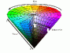

| IRIS Home |
| IRIS Foundation |
| IRIS-XT |
| IRIS-3D |
| IRIS Runtime |
| Osiris |
| Source code |
| Discussions |
| Datasets |
| LiveJournal |
| References | COMRADE Home |
| About me |
Discussions
What is this section anyway?
Glad you asked! This page contains all information which could not be slotted neatly into any particular section. Think of this as a mixture of a FAQ and abbreviated discussions on the techniques incorporated in IRIS. Each of the topics here warrants its own section, but for now, this will have to suffice. With that out of the way, let's get started.
- Color spaces
- Principle of the Cellular Automata Edge Detector
- Binocular stereovision vs. N-view stereovision
- IRIS-3D's quadtree stereovision engine
- Windows and Linux versions
Color spaces
The images received are usually interpreted as RGB streams, i.e., the color each pixel of the image is described by the relative proportions of the three primary colors (red, green, blue) used to create that color. In the case of bitmaps (.bmp files), each of the three channels can assume a value from 0 to 255. Thus 255-255-255 represents white, while 0-0-0 represents black.
However, the RGB color model is not amenable to most preprocessing operations. The HSV/HLS (Hue-Saturation-Value and Hue-Luminance-Saturation) color models are easier and more intuitive to work with. Click on the thumbnail below to see the geometric relationships between hue, color and luminance.
The principle of the CA_EdgeDetector
Cellular Automata are systems which follow simple, local, rules to cooperatively give rise to complex global behavior. This is exemplified by John Conway's classic simulation called the Game of Life. CA_EdgeDetector attempts to solve the edge detection problem by using the same principles. More on this soon...
2D stereovision versus N-view stereo
Coming up soon...
IRIS-3D's quadtree stereovision engine
Coming up soon...
Windows and Linux versions
In Windows, there are two modes in which you can open a file, the binary and the character mode. Basically, character mode operation is required when writing to or reading from vanilla text files. The binary format is almost always required for other purposes. So, to open a file in binary format for reading, for instance, you write:
ifstream infile("Some.xyz",ios_base::in|ios_base::binary);Note that the ios_base::nocreate format flag used in Dev-C++ is not supported by gcc 3.2; for a good reason since it does not exist in the standard either. It's there for no good reason :-)
However, Linux does not have a character mode: all files under Linux are opened in binary. This does not only make the ios_base::binary flag superfluous, it also causes bad results if you use it to open a file (like making the file size zero bytes).
The remedy is very simple, remove the offending flag from your file-handling code.